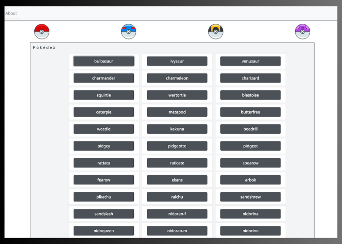
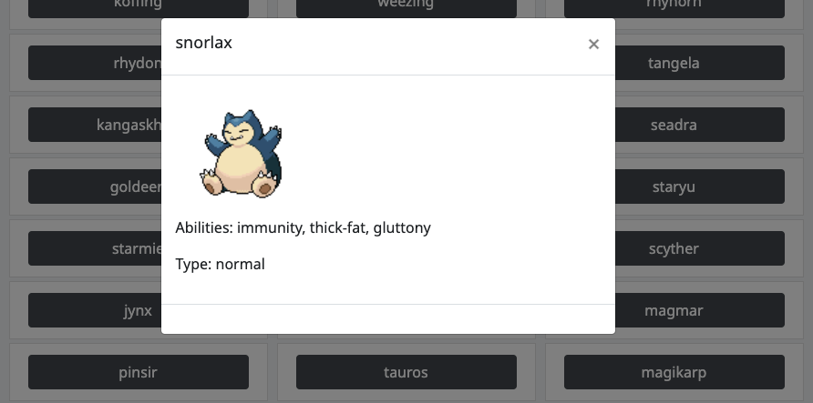

Pokedex App
Github link App linkThe Goal:
To build a small web application with HTML, CSS, and JavaScript that loads from an external API and enables the viewing of data points in detail.
The Purpose:
Career Foundry, Full-Stack Immersion, Achievement 1
To build my first full web application, including high-quality HTML and CSS. An introduction into JavaScript and learning how to access an external API.
The Tools:
- HTML
- CSS
- JavaScript
- jQuery
- Bootstrap
The Process:
This started with a deep dive into Javascript and learning how to really use this language for the first time. Focusing on basics like operators, loops, functions, and the DOM. We learned how to manipulate the DOM which for me was when I really got the first taste of how much was possible with Javascript. I had such a clear idea form the beginning of what I wanted this application to look like and I kept thinking of new elements I wanted to add in. I loved the feeling of building elements through Javascript and manipulating the DOM to display them right away.
I got my first taste of reading documentation and learning how to interact with external data, through this whole course clear documentation was something I learned to appreciate. We also started to work with asynchronous functions and promises. This was my first stumbling block that took me a moment to comprehend but after pushing and working through I became more comfortable with promises.
The Outcome:
I am very happy with this application and I think I will always feel very attached and proud of it as being the first “real” application I ever built. I still have a lot of ideas of ways I could make it grow into a fuller pokemon database. I still play pokemon (I love nuzloche challenges) and I would love to develop some more features like:
- Colored button matching pokemon's "type"
- Show a lot more data when pokemon is selected
- Be able to save pokemon into teams and view them
- Branch out into other generations of pokemon instead of the original 150